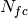

TOFTOFCropWorkspace dialog.
Table of Contents
| Name | Direction | Type | Default | Description |
|---|---|---|---|---|
| InputWorkspace | Input | Workspace | Mandatory | Input workspace. |
| OutputWorkspace | Output | Workspace | Mandatory | Name of the workspace that will contain the results |
Applies algorithm CropWorkspace v1 to an input workspace or a group of workspaces to crop the empty time channels. Boundaries are calculated as follows:
where  is the number of full time channels defined in the full_channels sample log and  is the channel width defined in the channel_width sample log.
is the channel width defined in the channel_width sample log.
Example
# Load data
ws=Load(Filename='TOFTOFTestdata.nxs')
print "Input workspace"
print "Total number of time channels: ", len(ws.readX(0))
print "Number of filled time channels: ", ws.getRun().getLogData('full_channels').value
wscropped = TOFTOFCropWorkspace(ws)
print "Output workspace"
print "Total number of time channels: ", len(wscropped.readX(0))
Output:
Input workspace
Total number of time channels: 1025
Number of filled time channels: 1020.0
Output workspace
Total number of time channels: 1020
Categories: Algorithms | Workflow\MLZ\TOFTOF | Transforms\Splitting
Python: TOFTOFCropWorkspace.py